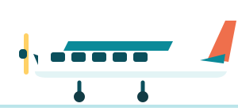

Belföldi repülő
Air Seychelles HM-3110, 11:10
kb. 105 300 Ft4742 SCR
két főre, adóval együtt (élő kosárár, 2026-10-10)
- Mahé 11:10 → Praslin 11:30 (Twin Otter, 20 perc). Tartalék: HM-3114, 11:35.
- A belföldi terminál 2 perc séta a nemzetközitől. Az utasfelvétel 10:10-kor zár.
- Délre a szálláson vagytok, az autót a praslini reptéren veszitek át.